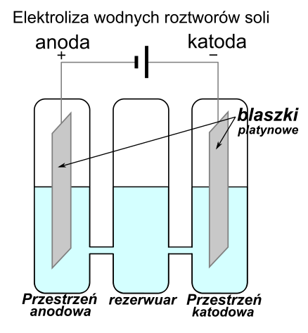
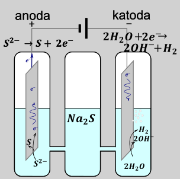
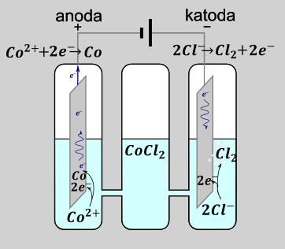
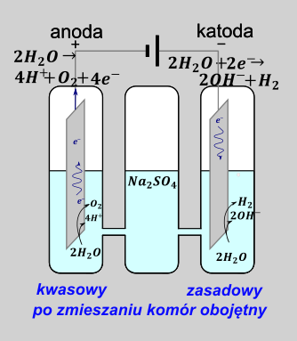

Elektroliza to proces wymuszony przyłożonym napięciem stałym, biegnący w przeciwną stronę niż w reakcji samorzutnej (wymuszony =odwrotny do samorzutnego). Proces ten zachodzi pod wpływem prądu stałego przyłożonego do elektrod (czyli blaszek takich jak w ogniwie).
Warunkiem koniecznym, aby proces elektrolizy mógł zachodzić jony muszą się swobodnie poruszać. Jeżeli jony nie poruszają się swobodnie wówczas nie możliwy jest ich przepływ, a więc nie możliwy jest przepływ ładunku. Brak przepływu jonów uniemożliwia przepływ ładunku, co uniemożliwia zachodzenie jakiegokolwiek procesu elektrochemicznego.
Proces elektrolizy najłatwiej wyobrazić, jako ładowanie akumulatora. Proces samorzutny polega na pobieraniu energii z akumulatora, natomiast podczas ładowania odwracamy ten proces dostarczając energię przez przyłożenie napięcie.
Jednocześnie reakcja zachodząca podczas elektrolizy nie w każdym wypadku musi być odwrotnym proces do procesu samorzutnego, może się zdarzyć, iż zachodzi reakcja zupełnie inna niż podczas procesu samorzutnego. Skrajnym przypadkiem jest proces ładowania baterii typu paluszek (o klasycznej, kwasowej konstrukcji ogniw, tzw.: „Heavy duty”). Proces taki kończy się wybuchem tegoż paluszka.
Układ, w którym proces elektrolizy jest odwrotny do procesu samorzutnego zwany jest akumulator i rzeczywiście można go zastosować, jako odnawialne źródło prądu, natomiast nie jest tak, że każde ogniwo jest akumulatorem. W przeciwieństwie do procesu samorzutnego odwrotnie niż w ogniwach,, w elektrolizie anoda jest dodatnia, a katoda ujemna, natomiast nadal na anodzie jest utlenienie, a na katodzie redukcja.
Metoda red cat (redukcja katoda)
Szkolne reakcje elektrodowe – reakcje elektrodowe, które powinniśmy znać. Oczywiście mogą być inne, ba nawet organiczne.
Elektrolizować możemy :
-sole, kwasy, zasady w ich roztworach wodnych. Ogólny schemat takiego procesu to:
\[K\ ( - ):\ \ (tylko\ jony\ dod) + nadmiar\ e^{-} \rightarrow (proces\ redukcji)\]
\[A( + ):(tylko\ jony\ ujemne) \rightarrow proces\ utlenienia + e^{-}\]
Jeżeli chodzi o szkolne reakcje, to jedynym jedynym gazem ,który się może wydzielić jest \(H_{2}\) w procesie katodowym (redukcji) natomiast dla procesu anodowego (utleniania) jest ich więcej. Z uwagi na budowę aparatu do elektrolizy możliwe są różne środowiska pH w przestrzeniu katodowej i anodowej
| Proces katodowy \(( - )\) | Proces anodowy\(( + )\) | |
|---|---|---|
| sol | Jeżeli potencjał metalu jest większy od około 1V zachodzi proces redukcji metalu: \[\ \ E_{Me^{n +}\text{/}Me}^{0} > - 1\ V\ \rightarrow\] \[Me^{n +} + ne^{-} \rightarrow Me\] Jeżeli potencjał metalu\(\ \)jest mniejszy od \(E^{0} < \ - 1V\) zachodzi rozkład wody w myśl równania: (również metale I i II grupy) \[2H_{2}O + {2e}^{-} \rightarrow H_{2} + 2OH^{-}\] Wydzielanie wodoru na obojętno Metale wydzielają się z roztworu od największego potencjału, przy czym niemożliwe jest wydzielenie metalu o potencjale mniejszym niż \(–1V\ \). Tzn z roztworu zawierającego jony \(Ag^{+};Cu^{2 +};Zn^{2 +};Na^{+}\) wpierw wydzielamy srebro, potem miedź potem cynk, a potem mamy rozkład wody bo \(E_{Ag} > E_{Cu} > E_{Zn} > - 1V > E_{Na}\) |
W obecności anionów \(Cl^{-};Br^{-};I^{-}\) \[2Cl^{-} \rightarrow Cl_{2} + 2e^{-}\] \[2Br^{-} \rightarrow Br_{2} + 2e^{-}\] \[2I^{-} \rightarrow I_{2} + 2e^{-}\] W obecności anionów \(S^{2 -}\) \[S^{2 -} \rightarrow S + 2e^{-}\] Fluorki nie reagują w ten sposób. Reakcje zachodzą od najmniejszego potencjału do największego, a więc najpierw zachodzi wydzielanie siarki, następnie jodu, bromu, i na końcu chloru Jeżeli nie masz pozostałych ani informacji wstępnej zachodzi wydzielanie tlenu w warunkach obojętnych: \[2H_{2}O \rightarrow O_{2} + 4H^{+} + 4e^{-}\] |
| Kwas | Wydzielanie wodoru na kwaśno \[2H^{+} + 2e^{-} \rightarrow H_{2}\] |
W obecności anionów \(Cl^{-};Br^{-};I^{-}\) \[2Cl^{-} \rightarrow Cl_{2} + 2e^{-}\] \[2Br^{-} \rightarrow Br_{2} + 2e^{-}\] \[2I^{-} \rightarrow I_{2} + 2e^{-}\] W obecności anionów \(S^{2 -}\) \[S^{2 -} \rightarrow S + 2e^{-}\] Fluorki nie reagują w ten sposób. Reakcje zachodzą od najmniejszego potencjału do największego, a więc najpierw zachodzi wydzielanie siarki, następnie jodu, bromu, i na końcu chloru Jeżeli nie masz pozostałych ani informacji wstępnej zachodzi wydzielanie tlenu w warunkach obojętnych: \[2H_{2}O \rightarrow O_{2} + 4H^{+} + 4e^{-}\] |
| zasady | Jeżeli potencjał metalu jest większy od około 1V zachodzi proces redukcji metalu: \[\ \ E_{Me^{n +}\text{/}Me}^{0} > - 1\ V\ \rightarrow\] \[Me^{n +} + ne^{-} \rightarrow Me\] Jeżeli potencjał metalu\(\ \)jest mniejszy od \(E^{0} < \ - 1V\) zachodzi rozkład wody w warunkach zasadowych zgodnie z równaniem: (również metale I i II grupy) \[2H_{2}O + {2e}^{-} \rightarrow H_{2} + 2OH^{-}\] |
Wydzielanie tlenu na zasadowo \[4OH^{-} \rightarrow 2H_{2}O + O_{2} + 4e^{-}\] |
Najważniejsze prawo elektrolizy – tyle, ile elektronów co dostarczono na katodę musimy odebrać na anodzie. (tzn. analogicznie jak przy reakcjach redoks), elektrony nie mogą być ani substratem ani produktem sumarycznej reakcji na elektrodach. Brak zgodności ilości elektronów doprowadzonych na katodę i odebranych na anodzie świadczy o zachodzeniu procesu ubocznego podczas elektrolizy. Równanie sumaryczne procesu elektrodowego, jeżeli jest to proces prosty (tzn. jedna reakcja katodowa, jedna anodowa) otrzymujemy przez zsumowanie równań obu procesów, tak, aby skróciły się elektrony, analogicznie jak w przypadku bilansu redoks.
Dla elektrolizy wodnego roztworu \(Na_{2}SO_{4}\ \)
Możemy zgodnie w tabelce odnaleźć zachodzące reakcje elektrodowe dla roztworów soli zawierających jony \(Na^{+}\) i\(\ SO_{4}^{2 -}\):
\[K\ ( - ):2H_{2}O + 2e^{-} \rightarrow H_{2} + 2OH^{-}\ (x2)\]
\[A\ ( + ):2H_{2}O \rightarrow O_{2} + 4H^{+} + 4e^{-}\]
Proces katodowy musimy przemnożyć razy dwa, aby po zsumowaniu skróciły się elektrony.
\[sum:\ 4H_{2}O + 2H_{2}O + 4e^{-} \rightarrow 2H_{2} + O_{2} + 4H^{+} + 4OH^{-} + 4e^{-}\]
Oczywiście elektrony skracamy z obu stron równania. Ilość przepływających elektronów dobrze jest zapisać w nawiasie lub nad strzałką, aby panować nad tym ile ich uczestniczy w reakcji, szczególnie w zadaniach z przepływem ładunku (zadania w których występuje \(Q\), \(I\), \(t\) i te sprawy)
\[6H_{2}O\ -^{4e^{-}} \rightarrow 2H_{2} + O_{2} + 4H_{2}O\ \]
W procesie elektrolizy (w sumie w żadnym) nie możemy mieć \(H^{+}\) i \(OH^{-}\) jednocześnie, gdyż nie mogą one razem współistnieć dając wodę:
\[6\ 2H_{2}O -^{4e^{-}} \rightarrow 2H_{2} + O_{2} + 4H_{2}O\]
\[2H_{2}O -^{4e^{-}} \rightarrow 2H_{2} + O_{2}\ \]
Taki zapis umożliwia szybkie obliczanie stechiometrii reakcji w trakcie jej trwania
Elektrolizę wodnych roztworów przeprowadzamy w aparacie Hoffmanna. Aparat ten zbudowany jest z trzech połączonych rurek szklanych, w dwóch skrajnych umieszczona jest blaszka platynowa, do której można podłączyć napięcie. Część roztworu, do której podłączony jest biegun dodatni zwana jest przestrzenią anodową, natomiast ta część, do której jest podłączony biegun ujemny zwany jest przestrzenią katodową.

Rozważmy kilka przykładów:

Elektroliza \(Na_{2}S\) czyli roztworu zawierającego jony \(Na^{+}\ i\ S^{2 -}\)zachodzi w myśl półrównań:
\[K:2H_{2}O + 2e^{-} \rightarrow H_{2} + 2OH^{-},\ gdyż\ E_{Na^{+}}^{0} < - 1V\]
\[A:\ S^{2 -} \rightarrow S + 2e^{-}\]
Sumarycznie możemy zapisać proces elektrodowy jako
\[2H_{2}O + S^{2 -} \rightarrow H_{2} + 2OH^{-} + S\]
A więc jednoznacznie powstają jony \(OH^{-}\) czyli układ się będzie alkalizował.
Elektroliza wodnego roztworu \(CoCl_{2}\), a więc związku składającego się z jonów \(Co^{2 +}\) i \(Cl^{-}\) zachodzi w myśl procesów elektrodowych
\[K:Co^{2 +} + 2e^{-} \rightarrow Co\ ,\ gdyż\ E_{Co}^{0} > - 1V\]
\[A:\ 2Cl^{-} \rightarrow Cl_{2} + 2e^{-}\]

Reakcja sumaryczna to
\[Co^{2 +} + 2Cl^{-} \rightarrow Co + Cl_{2}\]
Więc jednoznacznie widać, iż odczyn roztworu się praktycznie nie zmieni.
Natomiast najciekawszym przypadkiem jest elektroliza \(Na_{2}SO_{4}\)- związku składającego się z jonów \(Na^{+}\ i\ SO_{4}^{2 -}\). Procesy elektrodowe możemy zapisujemy jako
\[K:2H_{2}O + 2e^{-} \rightarrow H_{2} + 2OH^{-},\ gdyż\ E_{Na^{+}}^{0} < - 1V\]
\[A:2H_{2}O \rightarrow 4H^{+} + O_{2},gdyż\ \ brak\ reakcji\ dla\ SO_{4}^{2 -}\]
Komora anodowa będzie miała w trakcie trwania elektroli odczyn kwaśny, a anodowa zasadowy.

Sumaryczna reakcja elektrodowa to rozkład wody
\[2H_{2}O \rightarrow 2H_{2} + O_{2}\]
Po zaprzestaniu elektrolizy następi zobojętnienie przestrzeni anodowej i katodowej w myśl reakcji
\[H^{+} + OH^{-} \rightarrow H_{2}O\]
I roztwory we wszystkich komorach będą miały odczyn obojętny.
Możemy przeprowadzać elektrolizę stopionych substancji, które mają po stopieniu budowę jonowę, takie jak sole, tlenki metali, wodorki metali oraz wodorotlenki. W celu uzyskania ruchliwości jonów związki te należy przed elektrolizą stopić, umożliwia to przypływ ładunku podczas elektrolizy, a więc w ogóle zachodzenie procesu. Innymi słowy wsadzenie elektrod do ciała stałego nie spowoduje żadnego procesu redoks. Elektrolizę stopionych substancji przeprowadzamy w normalnym naczyniu (dosłownie jest większy garnek ceramiczny z wsadzonymi elektrodami w stopioną sól, w atmosferze gazu obojętnego)
| Proces katodowy | Proces anodowy | |
|---|---|---|
| sól | Zawsze: \[Me^{n +} + ne^{-} \rightarrow Me\] Metale wydzielają się z roztworu od największego potencjału, tzn z roztworu zawierającego jony \(Ag^{+};Cu^{2 +};Zn^{2 +};Na^{+}\) wpierw wydzielamy srebro, potem miedź potem cynk, a ostatni sód bo \(E_{Ag} > E_{Cu} > E_{Zn} > E_{Na}\) |
W obecności anionów \(Cl^{-};Br^{-};I^{-},\ F^{-}\) \[{2F}^{-} \rightarrow F_{2} + 2e^{-}\] \[2Cl^{-} \rightarrow Cl_{2} + 2e^{-}\] \[2Br^{-} \rightarrow Br_{2} + 2e^{-}\] \[2I^{-} \rightarrow I_{2} + 2e^{-}\] W obecności anionów \(S^{2 -}\) \[S^{2 -} \rightarrow S + 2e^{-}\] Reakcje zachodzą od najmniejszego potencjału do największego, a więc najpierw zachodzi wydzielanie siarki, następnie jodu, bromu, chloru i na końcu fluoru |
Tlenek metali (związek zbudowany z kationu metalu \(Me^{n +}\ \)i anionu \(O^{2 -}\)) |
Zawsze \[Me^{n +} + ne^{-} \rightarrow Me\] Metale wydzielają się z roztworu od największego potencjału |
\[2O^{2 -} \rightarrow O_{2} + 4e^{-}\] |
Wodorek metali (związek zbudowany z kationu metalu \(Me^{n +}\ \)i anionu \(H^{-}\)) |
Zawsze bez ograniczenia potencjału \[Me^{n +} + ne^{-} \rightarrow Me\] |
\[2H^{-} \rightarrow H_{2} + 2e^{-}\] |
| wodorotlenek | Zawsze bez ograniczenia potencjału \[Me^{n +} + ne^{-} \rightarrow Me\] Możliwy proces uboczny- rozkład wody powstałej w procesie anodowym |
\[4OH^{-} \rightarrow 2H_{2}O + O_{2} + 4e^{-}\] |
Np., chcąc zapisać półreakcje elektrodowe, zachodzące podczas elektrolizy stopionego \(Al_{2}O_{3}\)
Widzimy, iż tlenek zbudowany jest z jonów\(\ Al^{3 +}\ i\ O^{2 -}\), wówczas procesy elektrodowe są następujące:
\[K:Al^{3 +} + 3e^{-} \rightarrow Al\]
\[A:2O^{2 -} \rightarrow O_{2} + 4e^{-}\]
Sumarycznie, mnożymy proces katodowy razy 4, a anodowy razy 3, po zsumowaniu dostajemy:
\[4Al^{3 +} + 6O^{2 -} -^{12e^{-}} \rightarrow 4Al + 3O_{2}\ \]
Elektroliza stopionego \(NaH\)
Mamy jony \(Na^{+}\ i\ H^{-}\)
\[K:Na^{+} + e^{-} \rightarrow Na\]
\[A:2H^{-} \rightarrow H_{2} + 2e^{-}\]
Sumarycznie
\[2Na^{+} + 2H^{-} \rightarrow 2Na + H_{2}\]
Podczas elektrolizy mieszaniny związków jonowych soli , wodorotlenków itp. zarówno w roztworze wodnym jak i stopionym na katodzie najpierw idzie reakcja o najniższym potencjale (wydzielenia \(S;I_{2};Br_{2};Cl_{2}\ ;O_{2};F_{2}\)), a na katodzie ta o najwyższym (metal najmniej aktywny).. Kolejna półreakcja zachodzi dopiero po praktycznie całkowitym przereagowaniu reagentów w pierwszej reakcji. Na grafie samorzutności reakcji, zaczynamy od najmniejszego kółka, zwiększając je dopiero po wyczerpaniu się reagentów